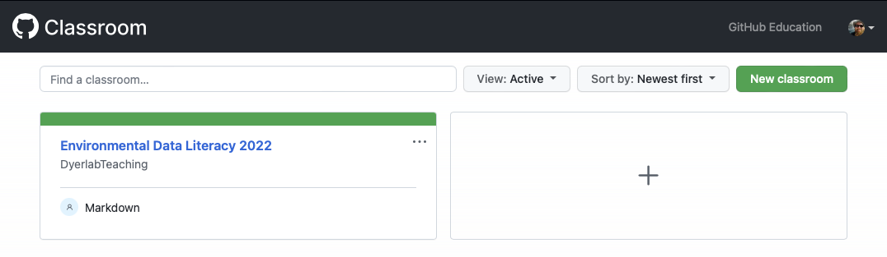
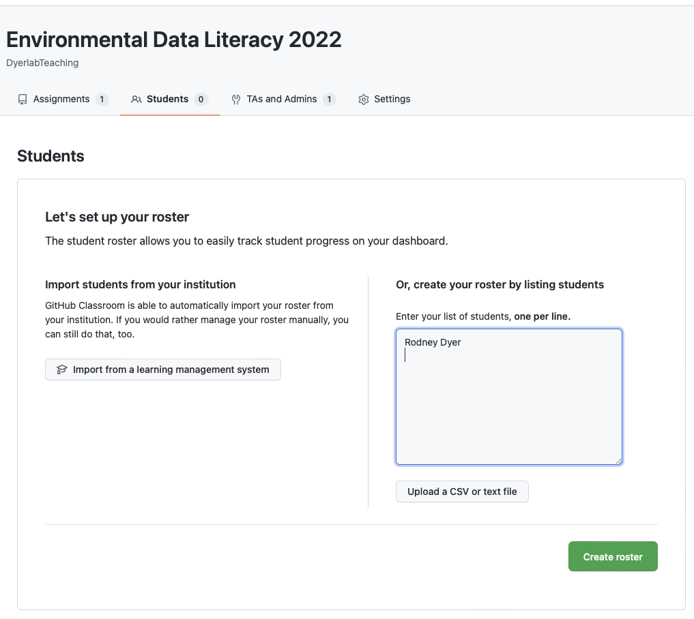
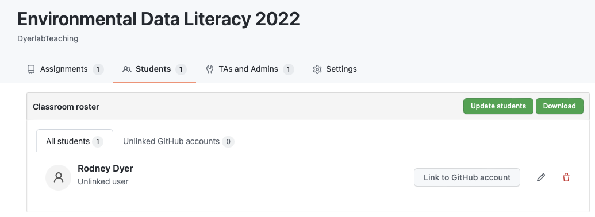
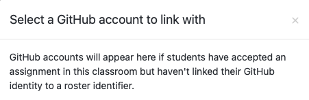

Google Classroom Setup
Setting It Up
Go to classroom.github.com and create a new classroom for the class you are using. You will have to log in with your github account. In these examples, I am using the dyerlab account as the instructor as it is the one with the connection to my DyerlabTeaching organization. I have a second account rodneydyer that will be used to demonstrate the ‘students perspective’ on the the setup.

General Workflow
I have set up this class such that we have individual learning topics, each of which is self-contained. These topics each have their own GitHub repository on DyerlabTeaching and are made using a template teaching repository that is set up as an RStudio project with markdown for slides, a longer narrative on the topic, in-class activity, and the homework. Any additional supplementary materials necessary for the topic (e.g., cheat sheets, data sets, manuscripts, etc.) are also supplied in the repository.
The general workflow is as follows:
Once the repository is ready, I add it to the classroom (see below)
I send the students the link through google classroom for the topic repository.
Google Classroom allows them to clone a version of it and download it to their own computer.
They now have access to all the teaching materials as well as homework for this topic.
They do the work in RStudio on their copy of the repository and then check in and push their copies back to GitHub.
I can then see their work, make comments, and corrections as necessary, and grade their individual work.
Adding Students
Once you have set up your classroom set up, you can add students. There are instructions on how to link to Canvas (follow them exactly) but you will also need to have the students share their GitHub user names with you. Here is how I did it manually.
You will need to have some student identifier or name, one per line in the text box.

Now you should see that you have new students in the class (a class of one in my case). This is where you’ll have to link each student with their Github account identification.

You’ll be able to link these once you have sent out an invitation to an assignment (shown in the next section).
If you have not added any assignments and students have not accepted any of them yet, you will get this dialog and you can come back and link the accounts then.

If there are subsequent back-and-forth that needs to happen, you’ll do the same thing.
Make changes
Commit
Push with message
The GitHub Repository becomes something that is share between you and the instructor and you can work collaboratively on it.